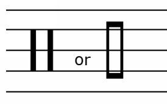
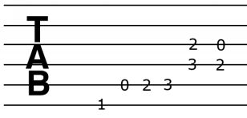
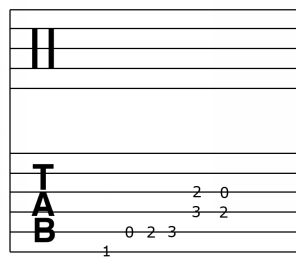

In addition to the treble and bass clefs, it is possible to orient the G- and F-clefs in different ways to name different notes on the staff. This occurs, for instance, in the contrabass clef, a variation on the F-clef, and in the French clef, a variation on the G-clef. There is also the C-clef and its variations, which is so named because it is centered on the C4 note (middle C). This is used to create the alto and tenor clefs, among others.
Generally speaking, G-clefs are used for higher parts, C-clefs for middle parts and the F-clefs for low parts.
Percussion clef is different from other clefs. The lines do not represent notes, but timbres. In other words, a particular line stands for the snare, and another one stands for the high hat, etc. Sometimes only one staff line is used to write rhythmic values of the notes; it is not necessary to use all five lines of the staff. The “notes” written on the staff are completely rhythmic, not having any harmonic or melodic value -- they are just there to show time (when you clap your hands or hit what drum/percussion instrument).

Figure 2.8.1. Percussion clef symbols
This is not a clef but a very much simplified alternative to the traditional notation system, used for all stringed (and fretted) instruments, most commonly guitars. It is used as a reference and to write down quickly and easily what is being played.
In Tablature (Tab for short) the number of the “staff” lines simply refers to the number of strings on a stringed instrument. If an instrument has 6 strings, there will be 6 lines on the staff, if there are 4 strings, tab will have 4 lines. Notes that should be played are represented by numbers written on the tab and those numbers correspond to a particular fret on the instrument. Sometimes other ‘technique symbols’ are written as well, such as hammer ons (H), pull offs (P), up slides (/), down slides (\), etc.

Figure 2.8.2. Tab example for 6-string guitar
Tablature is one-dimensional in a sense that it doesn’t give much information as to how a piece should be performed, and it cannot replace the traditional notation system. But nonetheless it is a useful memorization tool for remembering what notes to play where. Tablature works great when used in conjunction with the percussion clef in the form of a grand stave. Each number/note that is written on a Tab now has its rhythm value added, which adds another dimension to it.

Figure 2.8.3. Common way to write down transcribed music on guitar